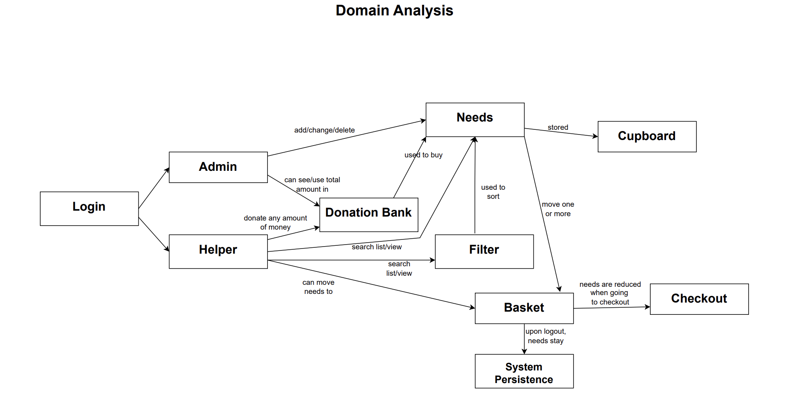
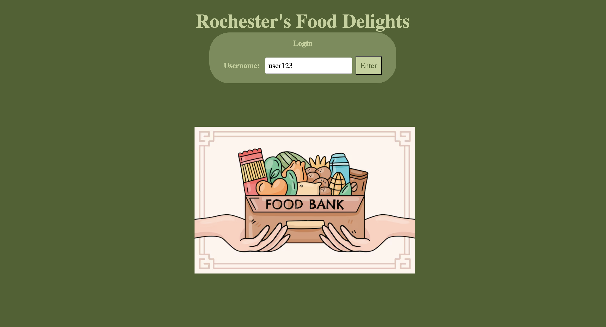
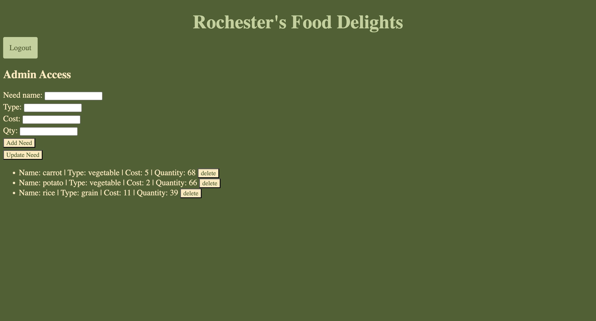
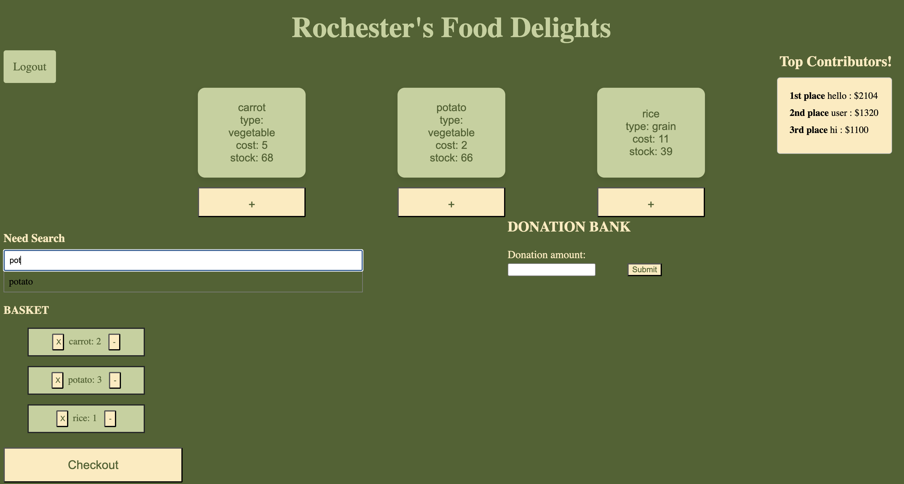

This was a project done in a team of four. This is a full stack application that models a food pantry with users and an admin. Users can browse inventory, add items to a basket, check out, and contribute to a donation bank. Admins can add, delete, and update food items in the inventory.

We began by designing a Domain Analysis Diagram to map out the logic and structure of the application before writing any code. This guided our backend design and data flow between the admin, users, and inventory system.

Users and admins log in through a shared login page that routes them to their respective dashboards based on their role.

Admins can add, delete, and update food items in the inventory through a dedicated management interface with full control over the pantry stock.

Users can browse the inventory, add items to their basket, and check out. A donation bank and live leaderboard displays the top three contributors on every user page.